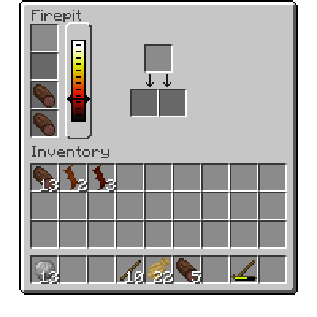
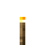

최초의 불
불은 중요한 기술적 발전입니다. 불을 피우기 위해서는 불피우개가 필요합니다. 불피우개를 사용하려면 간단히 오른쪽 버튼을 땅에 대고 꾹 누르면 됩니다. 잠시 기다리면, 연기가 나며 불이 피워집니다. 불을 성공적으로 피우기 위해서는 몇 번 다시 시도해야 할 수도 있습니다.


불피우개는 막대기 2개로 만들 수 있습니다.
모닥불
불피우개를 사용하면 모닥불을 만들 수 있습니다. 모닥불을 만들려면 원목, 하나 막대기 3개, 그리고 필수는 아니나 불쏘시개 3개가 필요합니다. 불쏘시개는 종이나 짚, 다른 아이템들이 될 수 있으며 모닥불이 만들어질 확률을 높여줍니다. 모든 아이템들을 Q 키를 눌러 하나의 블록 위에 던지고, 불쏘시개를 해당 블록 위에 사용하세요.
멀티블록
성공했다면 모닥불이 만들어집니다.
모닥불을 사용하면 모닥불 창이 열립니다. 왼쪽은 4개의 연료 슬롯입니다. 나무, 이탄, 막대기 더미를 맨 위의 슬롯에 넣어서 모닥불 연료로 사용할 수 있습니다. 연료는 맨 아래의 슬롯부터 타오릅니다. 옆에 모닥불의 온도를 표시하는 게이지가 있고, 오른쪽에는 가열되는 아이템들이 있습니다.
모닥불 창

2
따뜻함****
모닥불로 아이템을 가열하면 많은 유용한 아이템이 만들어집니다. 막대기를 가열하면 횃불이 만들어집니다. 횃불은 결국 꺼지기 때문에 불피우개를 사용해서 다시 켜거나 새로운 횃불을 설치해야 합니다.
뜨거움****
모닥불은 음식을 요리하기도 좋습니다. 모든 날고기와 반죽들은 모닥불에서 익힐 수 있고, 익히면 상하기까지 남은 기간이 늘어납니다. (자세한 내용은 여기에서 확인하실 수 있습니다.)
모닥불은 삽을 이용하여 끌 수 있습니다.
모닥불에 다른 장치들을 사용하면 기능을 늘릴 수 있습니다. 연철 석쇠은 모닥불을 석쇠로, 도자기 냄비는 냄비로 바꾸며. 장치들을 제거하려면, Shift 키를 눌러 웅크리며 오른쪽 버튼을 누르세요. 뜨거운 석쇠나 냄비를 제거하지 않도록 조심하세요!
멀티블록
석쇠나 냄비가 추가된 모닥불.
모닥불의 연료들은 각각 다른 순도를 가지고 있습니다. 불순물이 많은 연료를 사용하면 연기가 더 많이 나게 됩니다. 불순물이 굉장히 많아지면, 연기가 공기를 타고 매우 높이 올라갑니다. 가장 순도가 높은 연료는 통나무로, 그 중에서도 소나무가 가장 순도가 높습니다. 솔방울과 낙엽같은 연료들은 본격적인 요리를 하기에는 온도가 낮고, 굉장히 불순물이 많습니다.